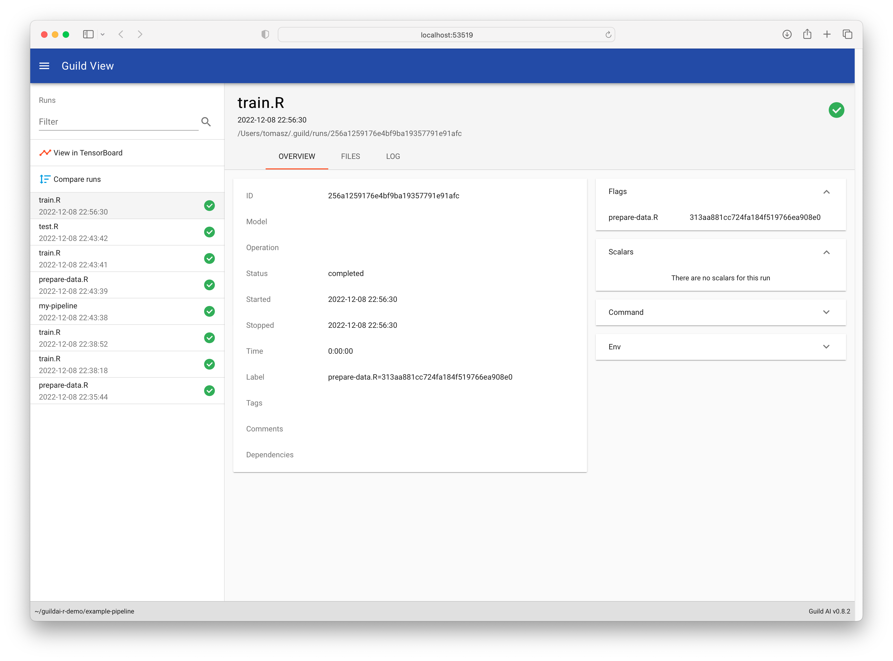
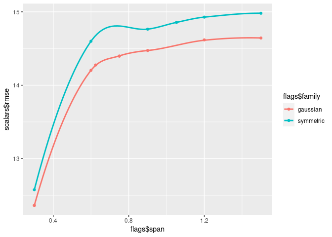

guildai provides a suite of tools for tracking, visualizing, and managing machine learning experiments. The guildai R package is a successor to the tfruns package.
Track the hyperparameters, metrics, output, and source code of every training run.
Compare hyperparameters and metrics across runs to find the best performing model.
No changes to source code required.
Installation
The R package provides an interface to Guild AI Core. The R package will
automatically download and install Guild AI Core on first use, or you
can call install_guild() directly to customize the
installation.
# install.packages("guildai")
if(!requireNamespace("remotes"))
install.packages("remotes", repos = "https://cran.rstudio.com")
remotes::install_github("guildai/guildai-r")
guildai::install_guild()Launch a Run
Guild AI can be used with any machine learning framework, or no framework at all. The Examples section in the top navbar shows how you can use guild with common machine learning frameworks like XGBoost, TensorFlow and Keras, Torch, mlr3 and Tidymodels.
In this introductory example, we’ll start by showing guild with no framework at all, on a very simple (and somewhat contrived) example.
Say we have an R script named "train.R" where we are
fitting a smoother line, like so:
model <- loess(dist ~ speed, data = cars)
plot(dist ~ speed, data = cars)
lines(x = 3:30, y = predict(model, 3:30), col = "blue")To train a model with guildai, use the guild_run()
function in place of the source() function to execute your
R script. For example:
This will launch a new R process in an isolated run directory using
the provided script. By default, the output stream from the run will be
shown at the R console (the same output stream you would see with
source("train.R", echo = TRUE) in the R console, or
R --file=train.R in the terminal).
View Runs
In an Interactive Application
Call guild_view() to launch the Guild View
application, which you can use to visualize and manage your runs. You
can use it to search, filter, visualize, compare run source code and
output, and more! It also bundles TensorBoard as an additional
visualization tool for viewing runs.

In R
Retrieve a data frame with run information in R using
runs_info():
run <- runs_info()
tibble::glimpse(run)
## Rows: 1
## Columns: 15
## $ label <chr> ""
## $ tags <list> <>
## $ marked <lgl> FALSE
## $ flags <tibble[,0]> <tbl_df[1 x 0]>
## $ scalars <tibble[,0]> <tbl_df[1 x 0]>
## $ operation <chr> "train.R"
## $ started <dttm> 2023-02-28 11:08:37
## $ stopped <dttm> 2023-02-28 11:08:37
## $ comments <list> [<tbl_df[0 x 4]>]
## $ status <chr> "completed"
## $ exit_status <int> 0
## $ deps <list> []
## $ project_dir <chr> "/tmp/RtmpA9r0F6/guildai-intro-sample-project-4acc12bdedaa"
## $ dir <chr> "/tmp/RtmpA9r0F6/guildai-intro-sample-project-4acc12bdedaa…
## $ id <chr> "ffb3ea427301412b9347194a9e66bed1"runs_info() returns a data frame with information about
runs, one row per run. In this introduction so far, we’ve only launched
1 run, so so runs_info() returns a 1-row data frame.
runs_info() supports a rich set of filter options that
can be conveniently supplied. For example:
ls_runs(1) # get the most recent run
ls_runs(error = TRUE) # get only runs that returned an errorSee ?runs_info() for more information.
In the Filesystem
guild_view() and runs_info() provide two
convenient ways to gather and present the information from runs.
Importantly however, the run directories themselves are easily
accessible. There you’ll find any files, plots, logs, or other output
generated by a run. The run directory also contains additional metadata
about the runs that guild recorded under the “.guild” folder. There
you’ll find plain text (yaml) files with information like the starting
random seed, environment variables, information about the package
versions, and other metadata frequently useful for reproducibility.
fs::dir_tree(run$dir[1], all = TRUE)
## /tmp/RtmpA9r0F6/guildai-intro-sample-project-4acc12bdedaa/.guild/runs/ffb3ea427301412b9347194a9e66bed1
## ├── .guild
## │ ├── attrs
## │ │ ├── cmd
## │ │ ├── deps
## │ │ ├── env
## │ │ ├── exit_status
## │ │ ├── flags
## │ │ ├── host
## │ │ ├── id
## │ │ ├── initialized
## │ │ ├── op
## │ │ ├── platform
## │ │ ├── plugins
## │ │ ├── r_packages_loaded
## │ │ ├── random_seed
## │ │ ├── run_params
## │ │ ├── sourcecode_digest
## │ │ ├── started
## │ │ ├── stopped
## │ │ ├── user
## │ │ └── user_flags
## │ ├── manifest
## │ ├── opref
## │ ├── output
## │ └── output.index
## ├── plots
## │ └── Rplot001.png
## └── train.RFlags
Flags are a form of run inputs, or parameterization.
guild_run() can modify flags when launching runs, and
guild_view() and runs_info() make it easy to
compare flags across runs. Any scalar literal assigned at the top level
of a run script is automatically identified as a flag.
Supplying run flag values
To illustrate, we’ll modify our script “train.R” by adding flags
span and family, which we pass as arguments to
the loess() smoother:
You can launch a run with different flag values like this:
guild_run() will modify the script file with the
requested flag values when starting the run, as if we had modified them
manually. This change is persistent, and will be visible when inspecting
the snapshot of run sources captured, e.g., with
guild_view() (or guild diff, or inspecting in
the filesystem).
The flags interface is useful for experimentation and hyperparameter
optimization. At it’s simplest, you can iterate over the set of flag
values you want and pass them to separate calls of
guild_run():
You can also pass multiple values for each flag, and guild will automatically expand the combinations to a grid. For example, this will launch 4 training runs, each a unique pairing of flags.
Another way to launch a batch of runs is to pass a data frame of flags values, with each row corresponding to a run.
flags_df <- expand.grid(span = c(0.5, 0.75),
family = c("gaussian", "symmetric"))
flags_df
## span family
## 1 0.50 gaussian
## 2 0.75 gaussian
## 3 0.50 symmetric
## 4 0.75 symmetric
guild_run("train.R", flags = flags_df, echo = FALSE)Retreiving run flags
The flags and flag values associated with each runs are returned by
runs_info() as a packed dataframe under the
flags name.
runs <- runs_info(1:4) # retrieve the last 4 runs
runs$flags
## # A tibble: 4 × 2
## family span
## <chr> <dbl>
## 1 symmetric 0.75
## 2 symmetric 0.5
## 3 gaussian 0.75
## 4 gaussian 0.5Scalars
The counterpart to run flags are run scalars. Whereas flags are a a special type of run input that guild can help manage, scalars are special type of run output that guild can help manage.
Any lines printed to stdout matching this pattern are identified as a scalar:
key: <numeric>To illustrate, here is “train.R” updated to output two scalars,
rmse and mse.
guild_run("train.R")
## > span <- .75
## > family <- "gaussian"
## > model <- loess(dist ~ speed, data = cars,
## + span = span, family = family)
## > plot(dist ~ speed, data = cars)
## > lines(x = 3:30, y = predict(model, 3:30), col = "blue")
## > mse <- mean(residuals(model)^2)
## > rmse <- sqrt(mse)
## > cat("mse:", mse, "\n")
## mse: 207.274320377417
## > cat("rmse:", rmse, "\n")
## rmse: 14.3970247057306When the script is run, these two lines in the printed output are identified by guild as scalars:
mse: 207.274320377417
rmse: 14.3970247057306We can retrieve the scalar results from runs with
runs_info():
runs_info(1)$scalars
## # A tibble: 1 × 2
## mse rmse
## <dbl> <dbl>
## 1 207. 14.4Here we see that guild has automatically identified rmse
and mse as scalars.
If you are printing values for the same scalar key
multiple times during a run (e.g, loss during a training
loop), then be sure to also print a step scalar in between,
to enable guild to track history (and enable visualization of the run
metrics with Guild View and TensorBoard).
runs_info() returns the last observed value for each run
scalar key, but the full history of scalars observed in runs can also be
accessed from R directly via runs_scalars().
If the run produces tfevent records in the run directory (e.g., via
keras::callback_tensorboard() or
tfevents::log_event()), those are also automatically
identified by guild as run scalars, and included in
runs_info() (and guild_view(), and TensorBoard
and other run views).
Guild Configuration
Guild accepts a variety of operation configuration options. One
convenient way of supplying configuration options is via hashpipe yaml
(#|) comments in the R script. Hashpipe comments are always
parsed as yaml (because yaml is a superset of json, json is also
valid).
Operation configuration
Guild options can be supplied as hashpipe yaml in the frontmatter of
the script (in lines 1-n). For example, we can inform guild that guild
should not echo the R expressions in the stdout log by supplying
echo: no like this.
#| echo: no
model <- loess(dist ~ speed, data = cars,
span = span, family = family)A comprehensive listing of all the operation configuration options that can be supplied to guild via script frontmatter can be found here.
Flag configuration
You can optionally supply additional metadata about individual flags by placing hashpipe yaml annotations above the flag expression.
Flag constraints
For example, we can update our “train.R” script to add constraints to
the span and family flags. For
span we’ll set a range of valid values from 0.3–3.0. For
family we’ll define a set of two valid string values
family can take, "gaussian" or
"symmetric".
#| echo: no
#| {min: .3, max: 3}
span <- .75
#| choices: [gaussian, symmetric]
family <- "gaussian"
model <- loess(dist ~ speed, data = cars,
span = span, family = family)
plot(dist ~ speed, data = cars)
lines(x = 3:30, y = predict(model, 3:30), col = "blue")
rmse <- sqrt(mean(residuals(model)^2))
cat("rmse:", rmse, "\n")Now if you attempt to launch the run with a flag value that’s outside the constraints defined, guild will throw an error:
Flag destinations
As a project grows, it can be helpful to be able to move flag
definitions out of the main R script. To do so, you can include a
flags-dest in the frontmatter of the R script, specifying
the file where guild should read and update the flag values. Then you
can read in the flag values in the main R script using
source() or similar.
#| flags-dest: ./flags.R
FLAGS <- envir::include("flags.R", new.env())
model <- loess(dist ~ speed, data = cars,
span = FLAGS$span,
family = FLAGS$family)YAML files are also supported as a flags destination:
Hyperparameter Optimization
The combination of flags with constraints and scalars make it possible to use a hyperparameter optimizer with guild. Here, flags are the hyperparameters, flag constraints define the hyperparameter search space, and a scalar is the objective to minimize or maximize.
To illustrate, here is an example run R script:
#| echo: no
#| {min: .3, max: 3}
span <- .75
#| choices: [gaussian, symmetric]
family <- "gaussian"
model <- loess(dist ~ speed, data = cars,
span = span, family = family)
plot(dist ~ speed, data = cars)
lines(x = 3:30, y = predict(model, 3:30), col = "blue")
rmse <- sqrt(mean(residuals(model)^2))
cat("rmse:", rmse, "\n")You can use an optimizer with this operation like so:
guild_run("train.R",
optimizer = "bayesian",
minimize = "rmse",
max_trials = 5)
## INFO: [guild] Random start for optimization (1 of 3)
## INFO: [guild] Running trial d459fbb729ea449c909aa63ca82f8768: train.R (family=gaussian, span=0.75)
## rmse: 14.3970247057306
## INFO: [guild] Random start for optimization (2 of 3)
## INFO: [guild] Running trial 2eb6d34b54fd4a92b8f581cf0a9b05a1: train.R (family=symmetric, span=0.9547426502497127)
## rmse: 14.8061751269351
## INFO: [guild] Random start for optimization (3 of 3)
## INFO: [guild] Running trial 7368411050e34130b1ea801631c3a13b: train.R (family=gaussian, span=2.641665759567874)
## rmse: 14.6885174763122
## INFO: [guild] Found 3 previous trial(s) for use in optimization
## INFO: [guild] Running trial 3d6b88fd3df743488debcb18e9e18327: train.R (family=gaussian, span=0.3)
## rmse: 12.3620973783366
## INFO: [guild] Found 4 previous trial(s) for use in optimization
## INFO: [guild] Running trial 15a2f795dafd44cbb5ede55f8b12dfa8: train.R (family=symmetric, span=0.3)
## rmse: 12.5758081076474See here for documentation on the optimizers built-in to guild.
Managing runs
Guild comes with a family of functions for managing runs.
- Annotate runs:
runs_comment(),runs_mark()andruns_tag(). - Move, archive, or copy runs:
runs_export()andruns_import(). - Delete runs:
runs_delete()runs_purge()runs_restore().
The runs_* family of functions all take
runs as a first argument, and can be composed with
|>. The runs arguments can be supplied as
data frame, as returned by runs_info() or
runs_scalars(). runs can also be a character
vector, with a flexible syntax supported for specifying runs selections:
For example, runs can be an id, an integer
(the n-th last run), or any combination of filter specifications like
running = TRUE and started = 'last hour'. See
?runs_info() for details.
To illustrate, lets launch a few runs and then investigate the results from all our previous runs (including the 10 hyperparameter optimization runs, as well as the runs with flag values we manually launched earlier in this guide):
library(dplyr, warn.conflicts = FALSE)
library(ggplot2)
runs <- runs_info()
runs
## # A tibble: 21 × 15
## label tags marked flags…¹ scala…² opera…³ started
## <chr> <lis> <lgl> <chr> <dbl> <chr> <dttm>
## 1 family=gaussian spa… <chr> FALSE gaussi… 14.6 train.R 2023-02-28 11:08:56
## 2 family=gaussian spa… <chr> FALSE gaussi… 14.6 train.R 2023-02-28 11:08:56
## 3 family=gaussian spa… <chr> FALSE gaussi… 14.5 train.R 2023-02-28 11:08:55
## 4 family=gaussian spa… <chr> FALSE gaussi… 14.2 train.R 2023-02-28 11:08:55
## 5 family=gaussian spa… <chr> FALSE gaussi… 12.4 train.R 2023-02-28 11:08:54
## 6 family=symmetric sp… <chr> FALSE symmet… 15.0 train.R 2023-02-28 11:08:54
## 7 family=symmetric sp… <chr> FALSE symmet… 14.9 train.R 2023-02-28 11:08:53
## 8 family=symmetric sp… <chr> FALSE symmet… 14.8 train.R 2023-02-28 11:08:52
## 9 family=symmetric sp… <chr> FALSE symmet… 14.6 train.R 2023-02-28 11:08:52
## 10 family=symmetric sp… <chr> FALSE symmet… 12.6 train.R 2023-02-28 11:08:51
## # … with 11 more rows, 10 more variables: flags$span <dbl>, scalars$mse <dbl>,
## # stopped <dttm>, comments <list>, status <chr>, exit_status <int>,
## # deps <list>, project_dir <chr>, dir <chr>, id <chr>, and abbreviated
## # variable names ¹flags$family, ²scalars$rmse, ³operation
runs <- runs %>%
# filter out runs that didn't print 'rmse: <numeric>'
filter(!is.na(scalars$rmse)) %>%
# filter out runs where the flag `span` was over 1.5
filter(flags$span <= 1.5)
runs %>%
ggplot(aes(x = flags$span, y = scalars$rmse,
color = flags$family)) +
geom_point() + geom_smooth(se = FALSE)
best_run <- runs |>
filter(flags$family == "gaussian") |>
slice_min(scalars$rmse)
tibble::glimpse(best_run)
## Rows: 2
## Columns: 15
## $ label <chr> "family=gaussian span=0.3", "family=gaussian span=0.3"
## $ tags <list> <>, <>
## $ marked <lgl> FALSE, FALSE
## $ flags <tibble[,2]> <tbl_df[2 x 2]>
## $ scalars <tibble[,2]> <tbl_df[2 x 2]>
## $ operation <chr> "train.R", "train.R"
## $ started <dttm> 2023-02-28 11:08:54, 2023-02-28 11:08:49
## $ stopped <dttm> 2023-02-28 11:08:55, 2023-02-28 11:08:49
## $ comments <list> [<tbl_df[0 x 4]>], [<tbl_df[0 x 4]>]
## $ status <chr> "completed", "completed"
## $ exit_status <int> 0, 0
## $ deps <list> [], []
## $ project_dir <chr> "/tmp/RtmpA9r0F6/guildai-intro-sample-project-4acc12bdedaa…
## $ dir <chr> "/tmp/RtmpA9r0F6/guildai-intro-sample-project-4acc12bdeda…
## $ id <chr> "cea87b68b6aa42218b8f1182d652e28c", "3d6b88fd3df743488debc…
best_run |>
runs_tag("best") |>
runs_export("./best-runs")
## Modified tags for 2 run(s)
## Copying cea87b68b6aa42218b8f1182d652e28c
## Copying 3d6b88fd3df743488debcb18e9e18327
## Exported 2 run(s) to ./best-runsUsing guild from the terminal
guild can also be used directly from the terminal. Call
the R function install_guild_cli() to place the
guild executable installed by
guildai::install_guild() on your PATH:
export_guild_cli(dest = "~/bin")Then you can launch runs and perform other guild operations from the terminal:
guild run train.R
guild run train.R batch_size='[32,64]'As you move between the terminal and the R console, almost all of the same syntax supported at the terminal can be used in R by passing strings to the respective R functions.
By default, R character vectors supplied to ...
throughout most R functions are quoted for the system shell and passed
through to guild. This enables usage like:
guild_run("train.R", "batch_size=[32,64]")There are some additional conveniences provided for passing through command line options from R.
- Use
I()to avoid quoting a string for the shell, allowing you to pass through multiple arguments in a single string. - For arguments that take values, you can pass them from R as named arguments or named objects.
- Named arguments are automatically translated from R conventions to
shell conventions:
-
_in a argument name is converted to-, and a--prefix is automatically added, sobatch_comment = "foo"becomes--batch-comment 'foo'. - boolean values are understood to be switches, so
running = TRUEis translated to--running, whilerunning = FALSEis translated to--not-running. - names vectors are automatically recycled for the shell, so
tag = c("a", "b" "c")becomes--tag a --tag b --tag c. - A single leading
.in an argument name is treated as a short option name, e.g.,.Fs = "last hour"becomes-Fs 'last hour' - Nested lists are recursively flattened into a single character vector
-
Here are a few different R expressions that invoke guild
with identical system calls.
runs_info(marked = TRUE, started = 'last hour')
runs_info("--marked", "--started" = "last hour")
runs_info("--marked", c("--started", "last hour"))
runs_info("--marked", c("--started" = "last hour"))
runs_info(c("--marked", "--started", "last hour"))
runs_info(I("--marked --started 'last hour'"))
runs_info(I("-Fm -Fs 'last hour'"))
runs_info(.Fm = TRUE, .Fs = 'last hour')
runs_info("-Fm", "-Fs" = "last hour")Addin
The guildai package installs an RStudio IDE addin which provides quick access to frequently used functions from the Addins menu:
Note that you can use Tools -> Modify Keyboard Shortcuts within RStudio to assign a keyboard shortcut to one or more of the addin commands.
Specifically three addins are provided:
- Launch a
guild_run()with the current source document. - Launch
guild_view(). - View
runs_info()in the interactive table viewer.
It’s recommended that the action for “Launch
guild_run()” be assigned to keyboard shortcut Ctrl/Cmd +
Alt + Enter.
Background Training
Since training runs can become quite lengthy, it’s often useful to
run them in the background in order to keep the R console free for other
work. In the RStudio IDE, guild_run() automatically
launches runs as background jobs. To disable this feature, set
options(guildai.run_as_job = FALSE).
Learn More
See https://my.guild.ai/t/guild-ai-documentation/64 for more information.